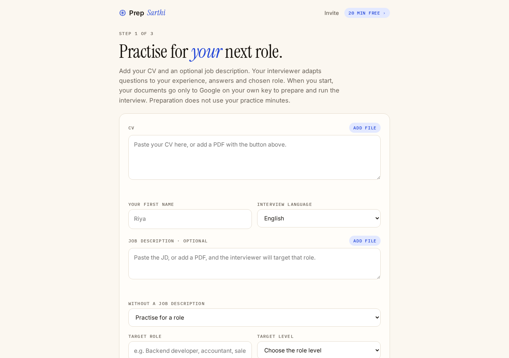

Home › Guides › Amazon interviews
Amazon Leadership Principles interview: questions and STAR answers
For Indian candidates interviewing with Amazon in India, the US, the UK, Canada or anywhere else: how the loop works and how to prepare your stories.
Short answer: Amazon interviews are built around its 16 Leadership Principles. Each interviewer in the loop covers a few principles and asks for real examples (“Tell me about a time…”), then digs with follow-ups for detail and data. Prepare at least two true stories per principle, answer with STAR, say “I”, and include numbers. Amazon asks candidates not to use AI tools during interviews, so do your preparation before the call.
Amazon asks candidates not to use AI tools during its interviews. Prepare before the call instead.
How the Amazon loop works
- Online assessment or phone screen, depending on the role: for technical roles often a coding assessment, for others a recruiter or hiring-manager screen with one or two principle questions.
- The loop: several interviews, often in one day, each with a different interviewer. Every interviewer is assigned principles to assess and writes up evidence from your answers.
- The Bar Raiser: one interviewer, usually from outside the hiring team, whose job is to keep the hiring bar high across Amazon. They have a strong say in the final decision.
Technical roles add coding or system design, but the principle questions run through every round, including technical ones.
The 16 Leadership Principles, with a likely question for each
| Principle | Likely question |
|---|---|
| Customer Obsession | Tell me about a time you went beyond what a customer asked for. |
| Ownership | Tell me about a time you took on something outside your responsibility. |
| Invent and Simplify | Tell me about a time you found a simpler way to do something. |
| Are Right, A Lot | Tell me about a decision you made with incomplete information. |
| Learn and Be Curious | Tell me about something you learned recently on your own. |
| Hire and Develop the Best | Tell me about a time you helped someone on your team grow. |
| Insist on the Highest Standards | Tell me about a time you refused to compromise on quality. |
| Think Big | Tell me about a bold idea you proposed. |
| Bias for Action | Tell me about a time you acted quickly without all the data. |
| Frugality | Tell me about a time you achieved more with fewer resources. |
| Earn Trust | Tell me about a time you received difficult feedback. |
| Dive Deep | Tell me about a problem you solved by digging into the details. |
| Have Backbone; Disagree and Commit | Tell me about a time you disagreed with your manager. |
| Deliver Results | Tell me about a time you delivered despite a major obstacle. |
| Strive to be Earth's Best Employer | Tell me about a time you made your team's work better or safer. |
| Success and Scale Bring Broad Responsibility | Tell me about a decision where you considered its wider impact. |
Read the full wording of each principle on Amazon's own site before the interview; interviewers listen for the behaviours it describes.
Two full answers
Dive Deep: “Tell me about a problem you solved by digging into the details.”
“Situation: our app's checkout success rate dropped from 97% to 91% over a week, and the dashboards showed nothing wrong. Task: I was the on-call engineer, so finding the cause was mine. Action: I split the failures by device, app version and payment method and saw that almost all came from one bank's card on Android. I pulled raw gateway logs, found the bank had started returning a new error code that our app treated as a hard failure, and shipped a fix that retried that code once. Result: success went back to 97% within a day of the release, and I added an alert for any new gateway error code, which caught two more changes that quarter.”
Have Backbone; Disagree and Commit: “Tell me about a time you disagreed with your manager.”
“Situation: my manager wanted to launch a feature to all users at once before a festive sale. Task: I owned the release, and our test data showed a crash risk on older phones. Action: I brought the crash numbers to him and proposed a 10% rollout for two days. He decided to go to 50% because of the sale. I disagreed, said so once with the data, then committed: I set up crash alerts and stayed on call for the launch. Result: the crash appeared on 2% of older phones; the alert fired within an hour and we fixed it the same day. Afterwards he made staged rollouts our default.”
Examples to show the shape. Use your own stories: every detail will be probed.
What follow-ups sound like
Amazon interviewers often spend more time on follow-ups than on the first question: “What data did you look at?”, “What was your exact role?”, “What would you do differently?”, “What did your manager say?”. A story you only half-remember falls apart here, so pick stories you know in detail.
Mistakes Indian candidates make in the loop
- “We” instead of “I”. The interviewer needs evidence about you.
- The same story for every principle. Interviewers compare notes; have different stories.
- No numbers. “Improved performance” scores lower than “cut page load from 4 seconds to 1.5”.
- Long project background. Thirty seconds of context, then your actions.
- Hiding a failure. “Tell me about a time you failed” wants a real failure and what you changed afterwards.
Amazon's rule on AI tools
Amazon asks candidates to confirm that they will not use unauthorised tools, such as generative AI, during interviews or assessments, and its recruiter guidelines say candidates who do can be disqualified. Do the work beforehand: write your stories down, then practise them out loud until you can tell each one in about two minutes and survive three follow-ups.
Practise your Leadership Principle stories out loud
Prep Sarthi runs a spoken AI mock interview from your CV and the job you are applying for, asks follow-up questions when an answer is thin, and gives feedback with a stronger version of each answer. Try a free 7-minute demo with nothing to set up; a paid pass is ₹99 for 30 days. It works on a phone or a computer.

Try a free AI mock interviewSee STAR answers with examples and US job interviews for Indians.